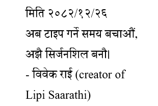
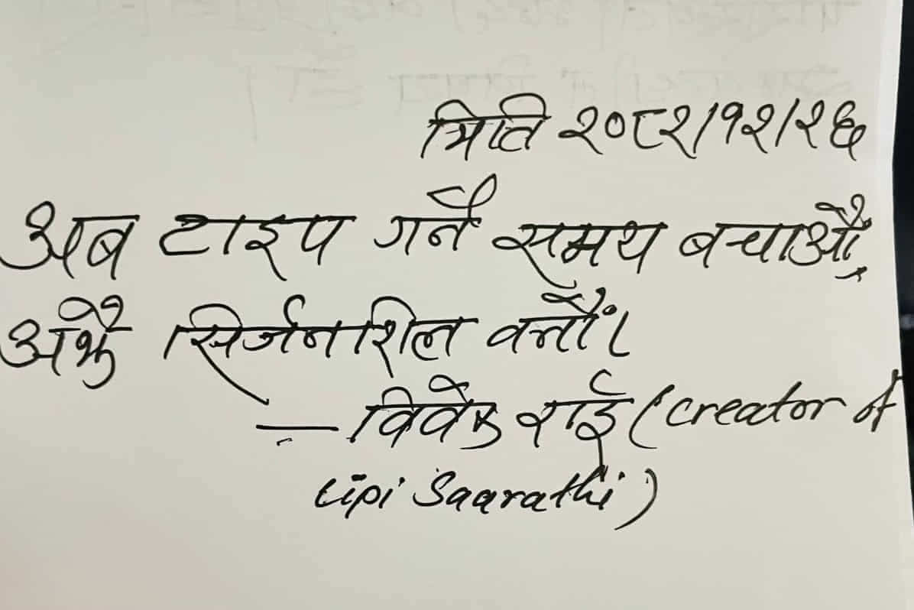

Lipi Saarathi
"Convert any Nepali text image – handwritten or printed – into clean, editable text"
Free & open‑source
☕ Buy me a coffee


Lipi Saarathi solves the real problem of digitizing handwritten Nepali text. Whether you're a student, researcher, or business, save hours of manual typing.
- Optimized for messy Nepali handwriting, not just printed text
- ↩️ One click removes unnecessary line breaks from OCR results
- One‑click convert, copy, or export to .txt / .docx
- Works with both handwritten and printed Nepali script
"A game changer for Nepali content creators."
We understand that your documents may contain sensitive information. Lipi Saarathi is designed to give you full control over your data.
- The first time you run the app, a popup explains exactly how the OCR works and what data is sent.
- The app never collects, stores, or shares your documents or usage habits.
- Every line of code is available on GitHub for you or any security expert to audit.
OCR pipeline: The app uses chrome-lens-py to connect to Google's powerful OCR engine.
- 1. Image upload → pre‑processing (resize, contrast)
- 2. Neural network‑based text detection (Devanagari‑trained)
- 3. Language model post‑processing for Nepali
- 4. Editable result, export to .txt / .docx
Perfect for classroom demonstration: students see AI in action, learn about image processing, and privacy implications.
Experience the future of Nepali OCR
Upload any handwritten (Also works with printed Nepali text) Nepali page, click "Generate", and get clean, editable text within seconds. Adjust zoom, remove line breaks, and export to Word or plain text. And respects your privacy.

❓ Why does Windows show a "dangerous file" warning?
SmartScreen flags any unrecognized app, not just malware. Large commercial apps pay for code signing certificates (₹10,000+ per year). As a free open‑source project, we haven't purchased one yet. The file is safe – scan it with any antivirus or review the open-source code on GitHub.
❓ Does this app send my documents anywhere?
Yes – the OCR requires sending your image to Google's servers. A clear warning appears on first run, and you can choose to cancel. No documents are stored, logged, or shared beyond that single OCR request.
❓ Do you track my usage or collect data?
Absolutely not. Lipi Saarathi has no telemetry, no tracking, no analytics. The app is 100% open source – you can verify this yourself on GitHub.
❓ How can I trust this app?
The full source code is public on GitHub. You can build the `.exe` yourself, scan the downloaded file with any antivirus (0 threats), or wait for community reviews. The warning is a false positive common for independent open-source software.
Bottom line: The app is safe, transparent, and respects your privacy. When Windows warns you, click "More info" → "Run anyway".
Ready to go paperless?
Join thousands of Nepali users who are digitizing their documents.
Get Lipi Saarathi (Windows .exe)Other projects by Developer
Lipi Saarathi
Browser‑based Nepali Unicode keyboard – No installation. Three layouts: Traditional, Romanized & English QWERTY. Export to .docx, keystroke sound, touch feedback, and theme options. Perfect for government exams, offices, and typists.
Discover Nepal
Interactive map of 77 districts & 7 provinces – Tap any district to explore area, population, and province. Tracks visited districts. A visual tool to learn Nepal's geography.
MOEST Accounting Tools
There are accounting‑related tools within the Ministry of Education, Science & Technology.